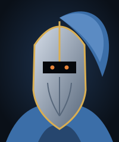

Espadão do Alvorecer
Forjado com o aço de uma estrela caída. Dizem que sua lâmina brilha mais forte quando há alguém inocente por perto.
Guardião da Chama Pálida

Gale foi o mais jovem cavaleiro da Ordem da Lanterna. Quando o Abismo Cinzento engoliu a Ponte Velha, ele desceu sozinho para buscar os feridos e voltou sem se corromper. Desde então, caminha pelas estradas esquecidas protegendo viajantes e acendendo fogueiras onde outros só veem ruínas.
Sua armadura azul está marcada por mil batalhas, mas a mão que segura o espadão nunca se ergueu contra quem pediu abrigo.
Forjado com o aço de uma estrela caída. Dizem que sua lâmina brilha mais forte quando há alguém inocente por perto.
Resistiu a mil golpes e ainda guarda o brasão da Lanterna.
A pluma serve de farol para quem se perdeu na névoa.
Uma dose de chama líquida que restaura as forças.
Lembra Gale da promessa que fez ao deixar a Ordem.
Desceu ao Abismo Cinzento e voltou com todos os resgatados.
Defendeu a travessia por sete noites seguidas.
Precisa de um escudo na estrada? Envie um chamado ao Gale.